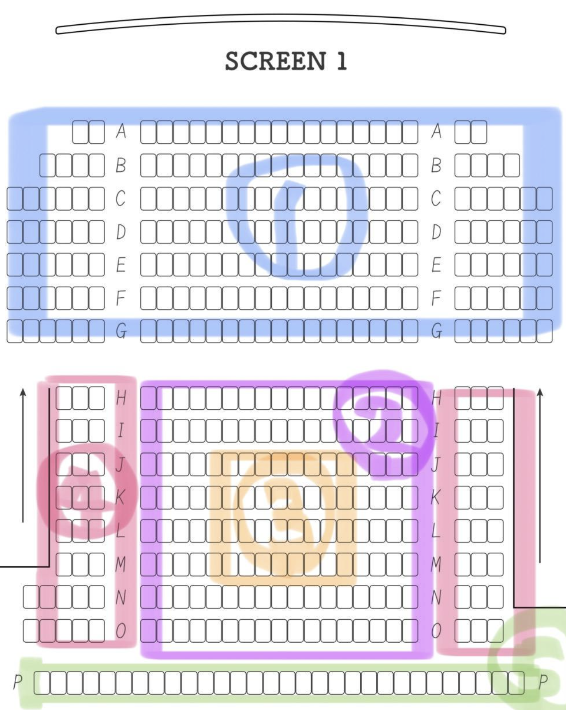
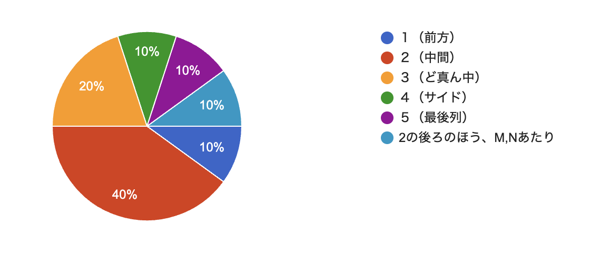

映画館を最高に楽しむ方法を紹介します。
・Tジョイ博多
・Tジョイ博多
・Tジョイ博多
・Tジョイ博多
みんなどこに座っているのか気になったので、アンケートを取ってみました。

アンケート結果

ちなみに私はいちばん後ろの端の席が好きです。（蹴られないで済むから、、）
王道。
最安→（Sサイズ、ユナイテッド・シネマ、Tジョイ、３２０円）
定番→塩、キャラメル
珍メニュー（期間限定有）→レモンレアチーズケーキ（イオンシネマ）、ストロングチョコレート・キャラメルチェダー・贅沢抹茶とホワイトチョコ・香るベーコン&チーズ・ご褒美チーズケーキ（Tジョイ）、トリュフソルト＆バター味・ブラックペッパー味・塩キャラメル味・いちごみるく味・サッポロポテトバーベQあじ（TOHOシネマ）
((バター多めって言ったらかけてくれるらしい、、？))
・ポテト
最安→（ユナイテッド・シネマ、400円）
珍メニュー（期間限定有）→シチリアハーブソルト味、トリュフソルトバター味（TOHOシネマ）
・ホットドッグ
最安→（ユナイテッド・シネマ、400円）
珍メニュー（期間限定有）→スパイシーハラペーニョ,ちょい辛サルサ＆アボカド,ガリポテ、ビーフシチュー＆チーズ、ケチャップ＆マスタード、4種のチーズ（TOHOシネマ）
・チュリトス
最安→（ユナイテッド・シネマ、TOHOシネマ、400円）
レインボーチュリトス（TOHOシネマズ）
・ドリンク
最安→イオンシネマ（Sサイズ、３２０円）
珍メニュー（期間限定有）→超パッション＆マンゴー・超ストロベリー、台湾レモネード、とろけるマスカット、黒糖ブラックタピオカミルクティー、ICEE（アイシー）（TOHOシネマ）
・その他
イオンシネマ→ナチョス（サルサ・チーズ）
Tジョイ→フライドチキン、クラフトビール、アイスクレープ、梅昆布茶
ユナイテッド・シネマ→ワッフル
TOHOシネマ→スパイシーポップチキン
ホットドッグ
トップページに戻る